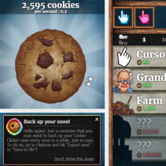
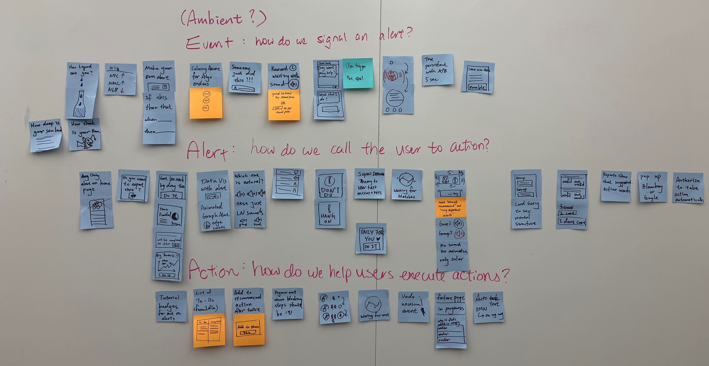
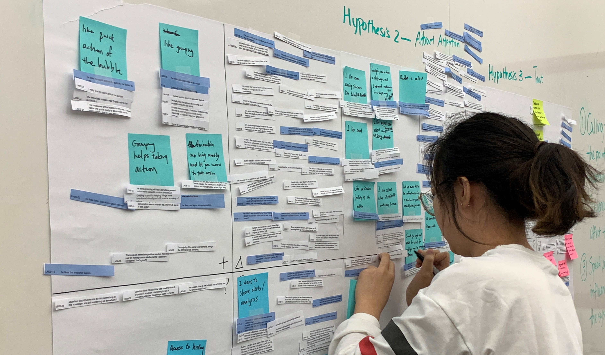

In the last phase of our project, our team evaluated our mid-fi prototypes through a visioning session with our clients. In this phase, we iterated on hi-fi prototypes, completed developing our guidelines, and tested our work onsite at Liquidnet and in remote testing.
Overview
This phase consists of ideating, concept testing, and prototyping. Through this process, we go from broad concepts to specific designs, selecting the ideas that have the most value ot our clients or users.
Problem
How do we collect and incorporate feedback to make our prototype applicable to trader's alert ecosystem?
Challenge
How do we design alerts to help attract users to Liquidnet and encourage them to take action in the front-end?
Design Journey
Research was a running theme throughout our design journey. Each of the steps below address how we used design to answer our research questions, and how our findings influenced our final product.
Design Research
User Testing
Final Product
Design Research
To make our work suitable for testing at Liquidnet, we started with hi-fi designs and did research through user testing.
User Testing
Our team used onsite interviews and remote calls for testing. We talked to proxy traders and relationship managers.
Final Product
New analogous domain research and feedback from user testing gave us direction for our final product.
Design Research
In preparation for onsite research, we refined our existing prototypes analogous research. This focused on specific case studies related to trading scenarios, and later expanded to basic research.

Alert Case Studies
We brainstormed domains that excel in getting the user's attention or encouraging user action and examined their techniques. If they were similar to trading, we applied them to our prototypes.
Analogous Domains
Later in our research, we used Elito Method to find analogous domains to trading. These domain's alerting mechanisms were studied, and paradigms were translated to our designs.
Refining Prototypes
We developed hi-fi prototypes for onsite testing. Designs came from the spring's mid-fi prototypes combined with paradigms from analogous case studies.
How did we come to these concepts?
DESIGN BRAINSTORMING
Our team first revisited the concepts brainstormed last semester. Due to difficulties interviewing traders, we used trading analogous case studies develop design guidelines for trading software.
Designing for Traders
Traders and trader data was too secure to study well
Our clients recommended studying similar domains
We applied analogous case studies to trading
Developing Guidelines
These analogous areas would influence prototypes
General concepts could be described in guidelines
We decided to write alert guidelines as a deliverable

Focusing on Alerts
Our previous work looked at all Liquidnet front-end
'Matching' apps (Uber, Tinder) show error prevention
Retail apps show information disclosure to user
ROUND 1 PROTOTYPES
After doing analogous case study work, our team focused on making four higher quality prototypes. Similar case studies were grouped together to make one testable concept for our onsite research.
User-Defined Alerts
Our visuals demo tests for urgency. Topics covered are color, animation, and sound. We tested a low, medium, and 2 high priority alerts.
Minimized View
This design was an unconventional, futuristic take. We wanted to challenge the current visual standard. We tested call-to-action through bubble alerts.
Grouping
To save screen space and increase efficient use of space in the alert stream, we designed a grouping system that would collect similar alerts under one topic or area.
User Testing
We tested hi-fi prototypes onsite and learned which concepts and features had the most value for traders. This segment some key points from our synthesized notes - they informed our final revisions of the prototype.
Increase the intensity of high urgency alerts
A trader's tolerance for sounds and visuals is higher than we expected. Traders actually want and will handle intense alerts for immediate actions. In general, our highest urgency attention-grabbing alerts could even be more extreme, though this could verge on annoying for the trader.
Use animation for conveying data
Contrary to what we thought, animation is less important for grabbing attention and more important in the context of data. In graphs, animation can quickly show status or progress.
Features to keep
Feedback for the alert stream was to use color to alert or indicate urgency. Customization and grouping was popular, and many responded that it would give more control to traders. Minimized view was one of the most popular ideas, and users loved its space-saving capabilites.
How did we test our prototypes?
RESEARCH METHODS
This section details the interview methodology used to test our prototypes, as well as some overall observations from the Liquidnet Labs event and other activities.
What we did
Prototypes in a 2-screen 'trading environment'
Traders were asked to act and explain demo use
Each of the four demos was independently tested
What we were looking for
More feedback on prototypes and alert design
Design restrictions in trader’s work environment
Observed what triggers a shift in attention
Benefits of testing
The feedback we received allowed us to refine fake text in demo
We learned that grouping and sharing of info or alerts was useful
Many design suggestions came out naturally from testers
Traders vs proxy users
Traders valued data more than proxy users
Traders liked bubble, proxies uncertain about it
Traders focus on the cohesion of their apps
SYNTHESIS
Interviews and other design activities done onsite were collected into a three-page Feedback Grid, whereas specific questions about desirability were sorted into a Kano Analysis chart.

What We Did
A four-quadrant grid was made for each research question
The top quadrants were features liked and constructive criticism
The bottom quadrants were new ideas and questions
What We Learned
Pulling information is a key interaction
Traders avoid new featuers if learning curve is high
These questions were about satisfaction with or without our designs
We charted desirability to find 'necessary' versus 'nice to have' features
What We Learned
Sound is a satisfier, whereas visuals are a basic need
Grouped alerts are a satisfier, so it's more valuable to pursue
Virtual assistant is a delighter, so it's nice to have but not necessary
What We Did
We sorted our dense feedback grids by categorizing data
We made design guidelines from the comments and suggestions
These guidelines would be recommendations we give to Liquidnet
What We Learned
Clustering helped highlight useful notes for redesigns
Report building and minimized view are valued ideas
None of our 14 concepts were too 'wild' for traders
ROUND 2 PROTOTYPES
After condensing a considerable amount of generative data on traders as mentioned in the last section, our team used the synthesized findings to iterate on our prototypes. Below are examples of how the alerts shown earlier evolved.
User-Defined Alerts
Sound classifications were previously misleading with red-green backgrounds indicating 'good' or 'bad' - we made our design more neutral and included more options as requested by those testing this concept.
Minimized View
The bubble form of the minimized view was extremely popular, though it clashed with the visual design of Liquidnet's current platform. In this update, we incorporated visual design elements like color and shape from our other alert features to make it feel more like a Liquidnet product.
Grouping
We focused on improving the visual appearance of the grouped alerts - because they were popular, we made them the same size as normal alerts and also provided more description underneath as context for the grouping itself.
USER FEEDBACK
After incorporating the feedback into the prototypes just shown, our team did one more round of user testing and analogous domain research. We had proxy users remotely navigate our prototypes, and also we brought in domain specialists to discuss analogous domain work. This then influenced the final design of the alert prototypes made.
Workflow overload
Traders typically master a workflow and stick to it
Connected workflows are not highlighted visually
Thus, traders are reluctant to learn new workflows
Finding features
Due to of visual clutter, new features are hard to find
No in-app help means traders must call sales for help
'Hidden features' in blotter are unused and unseen
Intensive Care Unit (ICU) Study
Four ICU nurses and volunteers were interviewed
We asked how they handle and understand ICU alerts
Nurses' take many alerts before acting, just like traders
Other Domains
Air traffic control and idle game research continued
We noted similarities and differences to trading
Paradigms from this research contributed to design guidelines
Final Product
After completing the synthesis of our user testing and finishing our last investigation into analogous domains, our team was able to build a guide of recommendations and prototype examples for Liquidnet. We developed the Tradewell Playbook, a resource that captures the guidelines, analogous domain research, and prototypes our team developed.
Guidelines
We conceptualized findings from secondary research and analogous domains into design guidelines that summarize the state-of-the-art practices.
Analogous Domain Research
Many analogous professions to trading require timely decision-making in high-stakes situations. After reseraching six analogous domains, we conceptualized their best practices into design guidelines.
Prototypes
With analogous domain and design guidelines gathered, we translated inspirations into prototypes which were validated by Liquidnet members and proxy users.
GUIDELINES
If you want to read about our final findings and view our revised prototypes, please view the Tradewell Playbook at the link below or contact our team for more details.
Takeaways
Our team was extremely proud to hand our website to our clients at the conclusion of our project. We presented our final concepts to our peers, clients, and faculty and were able to end the project on a high note. Overall, this phase of the project pushed our team to design realistic trading technology, while still keeping the trader's needs at the heart of our design.
Progress
Our team designed realistic prototypes and was able to present alert design guidelines and research through our Tradwell Playbook.
Learnings
Our team learned how to design demo prototypes for onsite work and discovered a unique way to present our findings to Liquidnet!